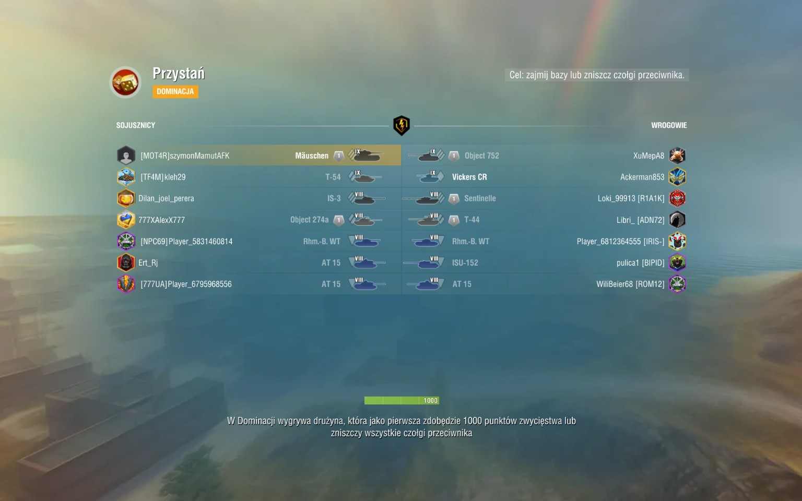
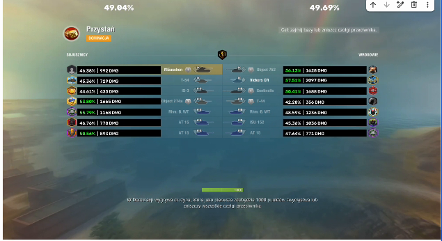

Input
A manually supplied battle loading-screen screenshot containing two seven-player teams.
BlitzPredict recognizes the 14 players visible on a World of Tanks Blitz loading-screen screenshot, corrects OCR errors, retrieves public statistics through the official Wargaming API, and renders a tactical HUD with Win Rate, average damage, and team averages.
Current implementation: Python notebook in Google Colab. The production client and cloud backend are planned, not yet deployed.

Working today
The current proof of concept validates the technical core. It does not yet claim automatic screen capture, a production backend, live overlay delivery, or commercial readiness.

A manually supplied battle loading-screen screenshot containing two seven-player teams.
OpenCV masks the original nickname regions and renders returned WR, average damage, and team averages.
Current capabilities
EasyOCR processes the two player-list regions instead of scanning the entire screen without structure.
A project-specific correction and cascading lookup system improves account matching when OCR misreads nicknames.
The prototype resolves player accounts and retrieves public Win Rate and average-damage statistics through Wargaming API endpoints.
OpenCV renders a usable result directly onto the source image and calculates average team Win Rate.
Current pipeline
Manual proof-of-concept input.
Two team areas and fourteen rows.
EasyOCR extracts candidate text.
Custom correction and cascading lookup.
Wargaming account and performance data.
OpenCV output and team averages.
Planned production architecture
The first production pilot should stay deliberately small. More complex streaming and historical analytics services can be added only when usage and benchmarks justify them.
Capture workflow, local preprocessing, user controls, and result presentation.
A containerized Python/FastAPI service for authenticated requests, account resolution, and analytics logic.
Reduce repeated external API requests and store only data required for the authorized workflow.
Measure failures, latency, cost, API behavior, and pilot reliability before broader release.
This architecture is a roadmap for turning the validated notebook pipeline into a controlled, measurable pilot. It is not presented as an already running production system.
Planned validation metrics
No benchmark numbers are invented here. Results will be published after a repeatable test set, methodology, and sample size are defined.
Exact-match success across varied screens, aspect ratios, clan tags, underscores, and long names.
TBD after test setHow often OCR candidates resolve to the correct Wargaming account after correction and cascading lookup.
TBD after test setTime from available screenshot to completed statistics and rendered HUD.
TBD: p50 · p95Estimated cloud cost per processed battle and per active user at controlled pilot volume.
TBD after cloud pilotExecution roadmap
Build a documented test set, measure OCR/account-resolution accuracy, instrument timing, and catalogue failure cases.
Develop the Android/Windows workflow, authenticated API, cache, monitoring, and a limited private pilot.
Test subscriptions or team plans, verify cost assumptions, expand analytics, and complete publisher-specific compliance review.
Commercial direction and responsible scope
Founder
Founder & Developer · Koksu Company
Karol built and tested the current Python proof of concept with AI-assisted development. He is responsible for the product concept, World of Tanks Blitz domain knowledge, OCR correction logic, API workflow, technical decisions, testing, and the path from notebook prototype to a commercial application.
Pilot and infrastructure support
Cloud resources would be used to package the backend, secure external API access, introduce caching and observability, benchmark performance, and support a limited pilot. The immediate goal is not unspecified scale. It is reliable evidence.
BlitzPredict is an independent project. World of Tanks Blitz and related marks are trademarks of Wargaming. This project is not affiliated with or endorsed by Wargaming.